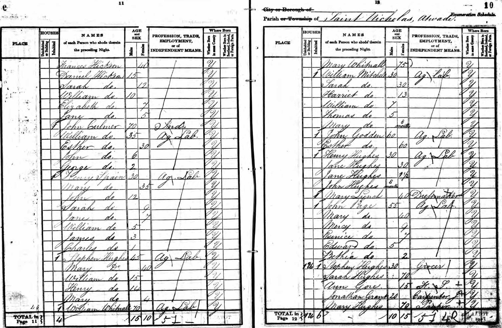
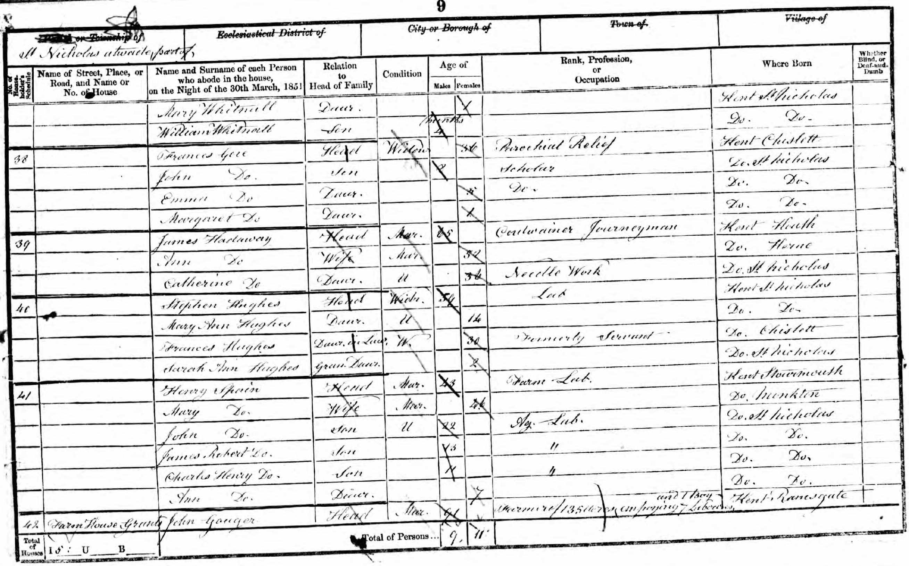
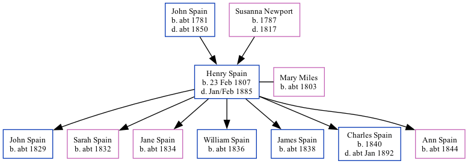

Henry Spain 1807 - 1885
[ Home ] | [ Calendar ] | [ Surnames Index ] | [ Family History ]An agricultural laborer and the son of John Spain (a laborer) and Susanna Newport, Henry Spain, the three times great-uncle of <a href="I1.html">Nigel Horne</a>, was born in Stourmouth, Kent, England on Feb 23, 1807<span class="citation">1,2,3,4,5,6,7</span>, was baptized there at All Saints Church, Church Lane on Apr 26, 1807 and married Mary Miles (with whom he had 7 children: <a href="I1957.html">John</a>, <a href="I1982.html">Sarah</a>, <a href="I1983.html">Jane</a>, <a href="I1984.html">William</a>, <a href="I1985.html">James Robert</a>, <a href="I1986.html">Charles Henry</a> and <a href="I1987.html">Ann</a>) at St Mary Magdalene, Monkton, Kent, England on Feb 10, 1827<span class="citation">8</span> (From Barry White's data).</p><p>Henry spent all of his life in Kent, England. Throughout his life, he lived in several places around the county: in St Nicholas-at-Wade in 1841<span class="citation">1</span>; at The Street, St Nicholas-at-Wade on Jun 6, 1841<span class="citation">10</span>; in St Nicholas-at-Wade on Mar 30, 1851<span class="citation">11</span>, in 1861<span class="citation">3</span> and on Apr 2, 1871<span class="citation">12</span>; and at The Street, St Nicholas-at-Wade on Apr 3, 1881<span class="citation">13</span>. <p>He died in Jan/feb 1885 in St Nicholas-at-Wade, Kent<span class="citation">6</span> and was buried there on Feb 11, 1885<span class="citation">9</span>.
Parents
- John was born c. 1781
- Susanna was born in 1787
Children
- John was born c. 1829
- Sarah was born c. 1832
- Jane was born c. 1834
- William was born c. 1836
- James Robert was born c. 1838
- Charles Henry was born in 1840
- Ann was born c. 1844
Citations
- 1841 England Census Online publication - Provo, UT, USA: The Generations Network, Inc., 2006.Original data - Census Returns of England and Wales, 1841. Kew, Surrey, England: The National Archives of the UK (TNA): Public Record Office (PRO), 1841. Data imaged from the National (Age: 30)
- 1851 England Census Online publication - Provo, UT, USA: The Generations Network, Inc., 2005.Original data - Census Returns of England and Wales, 1851. Kew, Surrey, England: The National Archives of the UK (TNA): Public Record Office (PRO), 1851. Data imaged from the National
- 1861 England Census Online publication - Provo, UT, USA: The Generations Network, Inc., 2005.Original data - Census Returns of England and Wales, 1861. Kew, Surrey, England: The National Archives of the UK (TNA): Public Record Office (PRO), 1861. Data imaged from the National
- 1871 England Census Online publication - Provo, UT, USA: The Generations Network, Inc., 2004.Original data - Census Returns of England and Wales, 1871. Kew, Surrey, England: The National Archives of the UK (TNA): Public Record Office (PRO), 1871. Data imaged from the National
- 1881 England Census Online publication - Provo, UT, USA: The Generations Network, Inc., 2004. 1881 British Isles Census Index provided by The Church of Jesus Christ of Latter-day Saints © Copyright 1999 Intellectual Reserve, Inc. All rights reserved. All use is subject to the
- England & Wales, FreeBMD Death Index: 1837-1915 Online publication - Provo, UT, USA: The Generations Network, Inc., 2006.Original data - General Register Office. England and Wales Civil Registration Indexes. London, England: General Register Office. © Crown copyright. Published by permission of the Cont
- Kent, England, Tyler Index to Parish Registers, 1538-1874 Online publication - Provo, UT, USA: Ancestry.com Operations, Inc., 2010. This collection was indexed by Ancestry World Archives Project contributors.Original data - Frank Watt Tyler. The Tyler Collection. Canterbury, Kent, England: The Institute of Herald
- Kent, Canterbury Archdeaconry Marriages - Findmypast
- England Deaths & Burials 1538-1991 - Findmypast
- 1841 England, Wales & Scotland Census - Findmypast (was age 30)
- 1851 England, Wales & Scotland Census - Findmypast (was age 43 and the head of the household)
- 1871 England, Wales & Scotland Census - Findmypast (was age 64 and the head of the household)
- 1881 England, Wales & Scotland Census - Findmypast (was age 74 and the head of the household)
Media
1841 UK Census

1851 UK Census

England & Wales deaths 1837-2007 - BMD/D/1885/1/AZ/000366/077
Canterbury Baptisms Transcription - GBPRS-CANT-B-96716003
England Deaths and Burials 1538-1991 Transcription - R_276599092
Kent, Canterbury Archdeaconry marriages 1538-1928 - GBPRS/CANT/M/97159488/1
1851 England, Wales & Scotland Census Transcription - GBC-1851-0005871660
1871 England, Wales & Scotland Census - GBC/1871/0014271840
1881 England, Wales & Scotland Census - GBC/1881/0004821301
1841 England, Wales & Scotland Census - GBC/1841/0013960209
England Births & Baptisms 1538-1975 - R_883903412
Family Tree
Generated by Ged2Site. Last updated on Jul 20, 2025